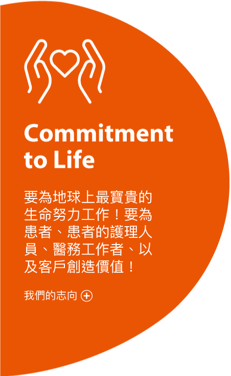
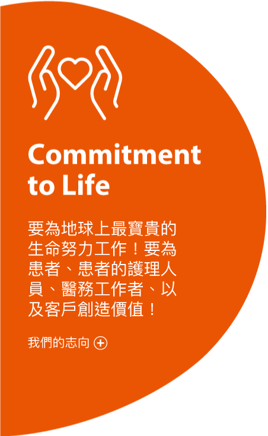

Taking the Walk of Life,
One Life at a Time.
認識更多
協和麒麟香港
協和麒麟香港致力於發展生命科學及其技術，從而創造新的價值，藉此為香港和澳門市民的健康和福祉作出貢獻。
協和麒麟香港於1993年在香港成立。主力於中國大陸開拓及推廣產品的市場銷售工作。直至2003年，我們才開展香港及澳門的市場。
作為總部設於日本的麒麟集團的一部分，我們致力於追求對生活質素的承諾，並將其作為我們工作不可或缺的其中一環。
多年來，協和麒麟努力不懈，不斷創新及專注於科技上的進步， 致力提高患者治療體驗及其價值觀，促進患者達到鮮有的治療領域。

經營理念
協和麒麟香港公司渴望與您同行合作，追求生命科學和技術的進步，通過創造新的價值，從而為全球人類的健康和福祉做出貢獻。
 
